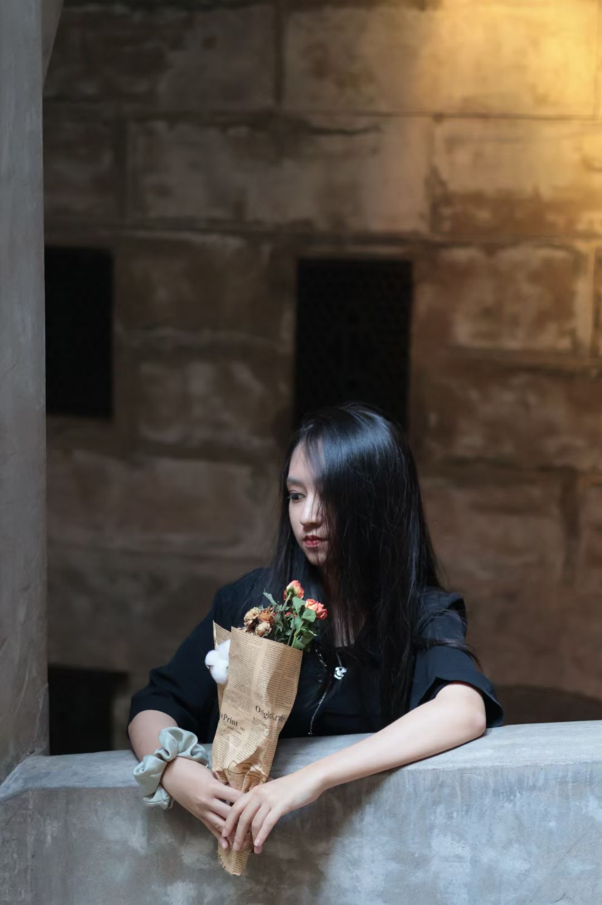
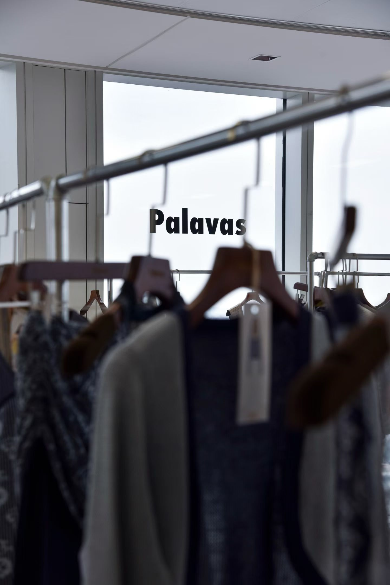
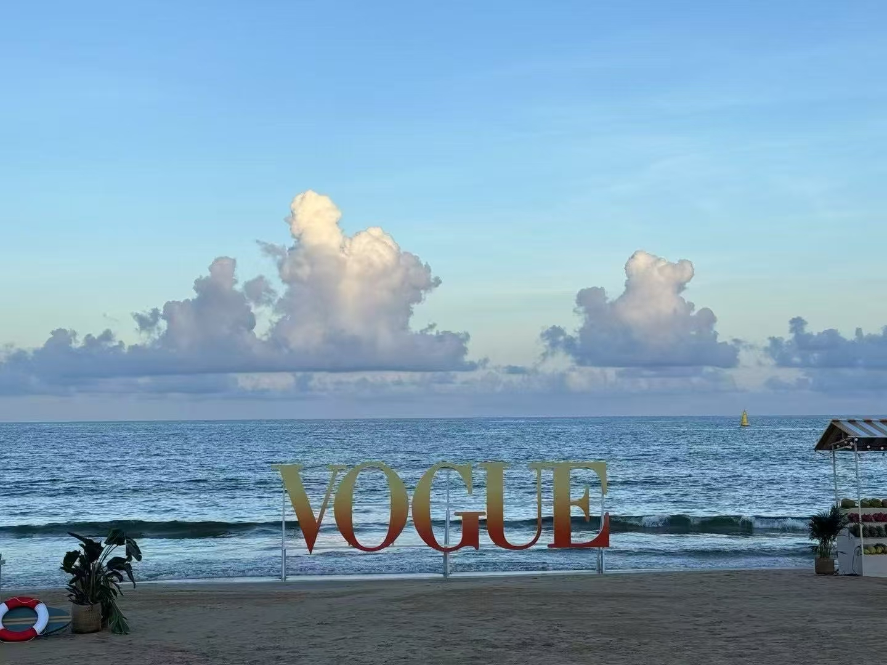
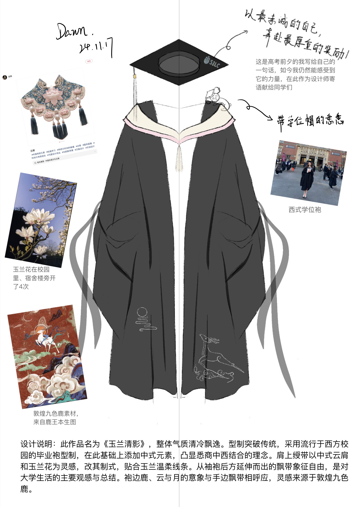
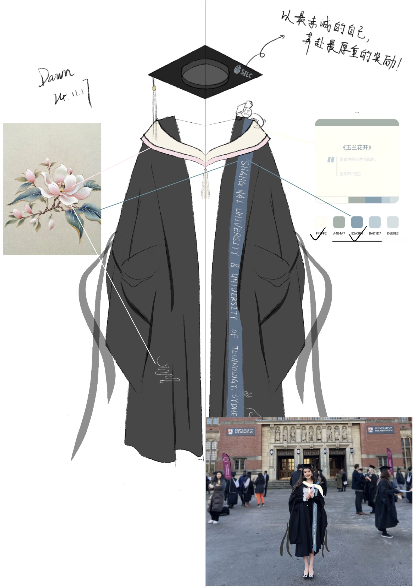
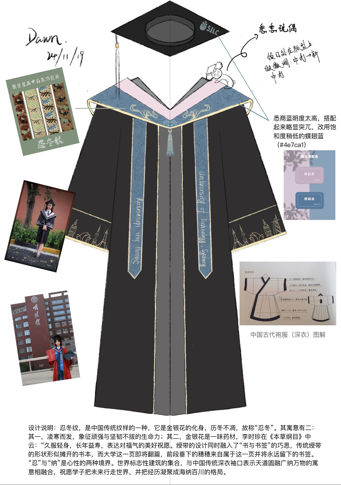
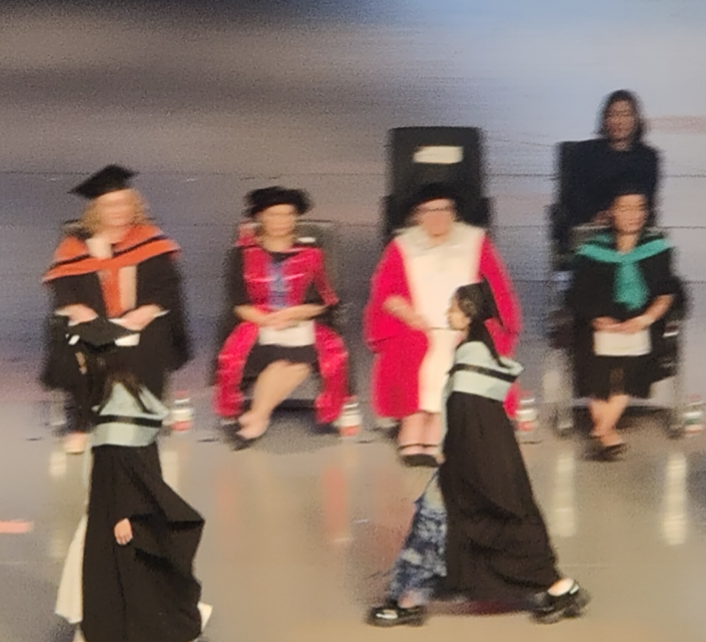
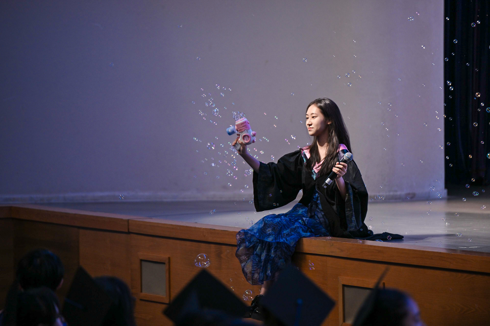

"Where Fashion Narrative Meets Strategic Insight."

国际时尚商业的当代议题、时尚创业与组织行为学、全球时尚战略管理、数字化颠覆与时尚创新管理、时尚与消费文化、高级纺织材料与技术、企业社会责任与可持续发展管理。
全球创新与中国企业家精神 (97)、时代音画 (96)、管理技巧 (94)、艺术与审美 (93)、管理的全球环境 (91)、人力资源管理 (90)、全球运营与供应链管理 (90)、商业洞察与创新 (88)。GPA: 3.57 / 4.00 (均绩: 88.28/100)


品牌叙事输出与趋势选品：在上海时装周 FIG Showroom 期间独立接待7–8位国内外买手。围绕品牌起源、季度主题、核心单品与工艺亮点，将产品信息转化为故事性的品牌表达。结合秀场趋势与买手画像输出搭配建议，优化 Lookbook 呈现逻辑，强化视觉叙事完整性。
大型时尚活动统筹：作为艺人统筹协助 2025 VOGUE Vacation 三亚 activity 执行，独立负责2位艺人行程统筹与现场沟通，主导35名艺统差旅及执行流程，保障大型高端时尚活动零失误落地。
传播策略与投标：支持开云集团旗下 Pomellato 品牌日常传播，主导 Pandora 品牌大使官宣数字传播，联动20+营销号精准放大声量。深度参与巴斯夫、欧莱雅及理肤泉的品牌化战略投标项目，独立提出创意概念与视觉提案，方案内容获正式采纳。
此板块将可持续绿色环保理念与跨界艺术舞台设计融合。向右滑动屏幕，查看《玉兰清影》学位袍的先锋概念手稿，以及来自毕业典礼现场的独家跨界舞台高光。
“旧饰不凡”项目核心成果：作为项目主导者，策划并组织开展可持续循环时尚实践，单日回收旧饰累计达 508件，并通过巧妙的结构解构与再设计，成功将其中的 9% 转化为全新的概念再设计原型。




负责上海大学悉尼工商学院毕业典礼的学位袍方案设计。型制突破传统，融合中式云肩与玉兰花灵感，修饰传统版型。最终因学院预算削减遗憾未能实现落地，艺术手稿荣获学院领导高度嘉奖。
主导毕业典礼歌曲串烧舞台策划，统筹舞美及现场呈现。在出差期间临时受邀参与毕业原创歌曲录制，面对零原创录制经验及紧张的排期，依靠极强的自主研究与高效练习，在短时间内完成歌曲高水准学习并最终主导作品高音部分的演唱录制。

深耕中国传统文化，自主设计创新趣味教学大纲。通过高效的师生内容共创模式极大提升了线上课堂的参与度，用数字媒介打破地域限制传递文化之美。
持续与偏远地区留守儿童开展长期的手写书信交流，用细腻纯粹的文字跨越空间建立长期的陪伴关系，修炼以极具温度的高品质内容输出情感价值的能力。